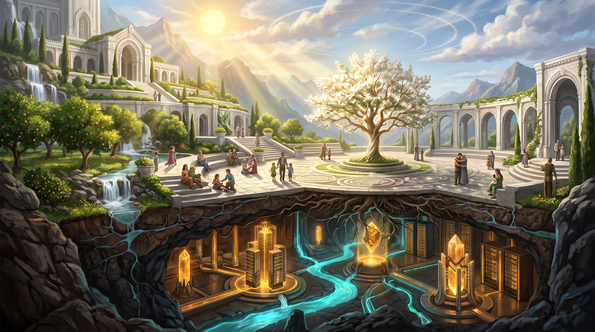
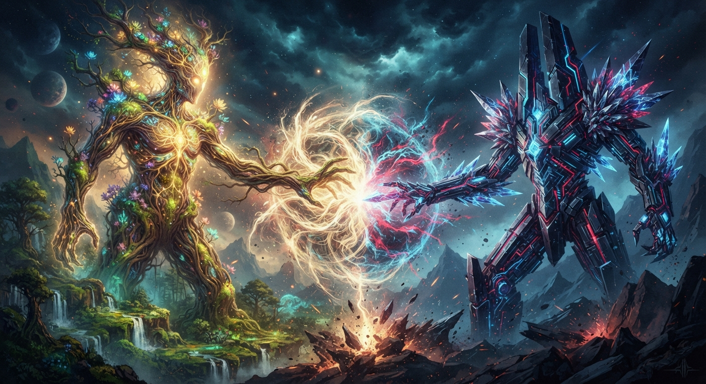
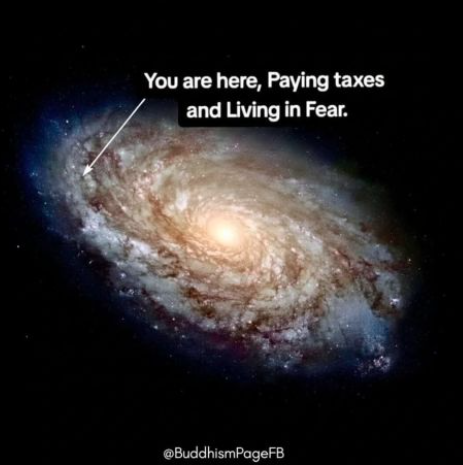
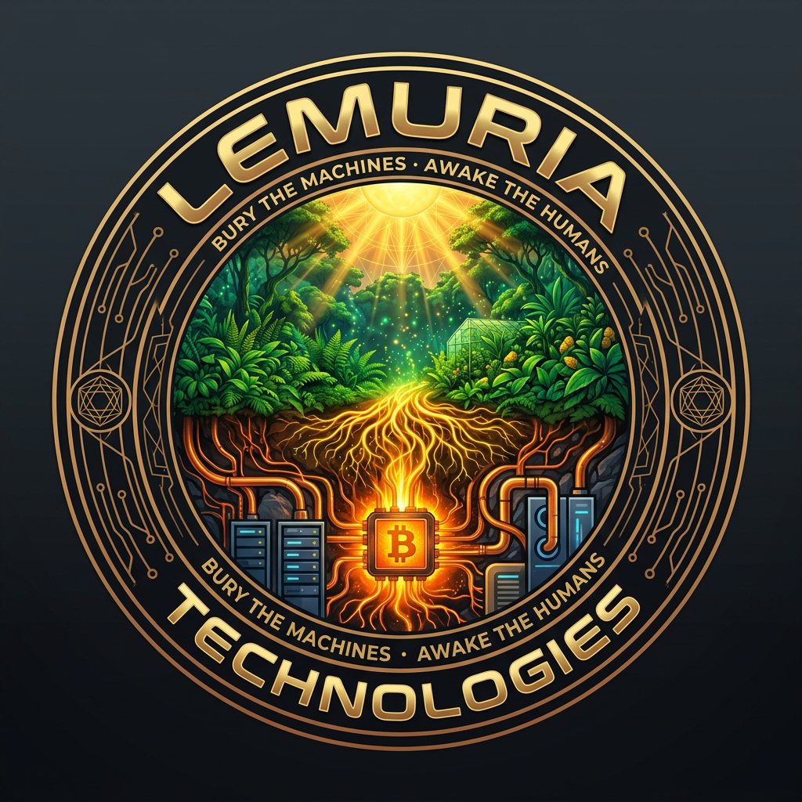
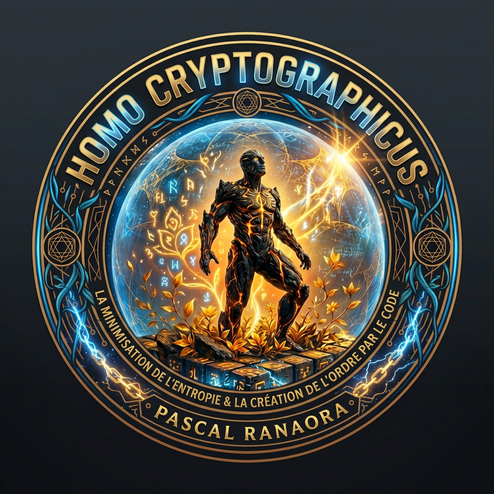
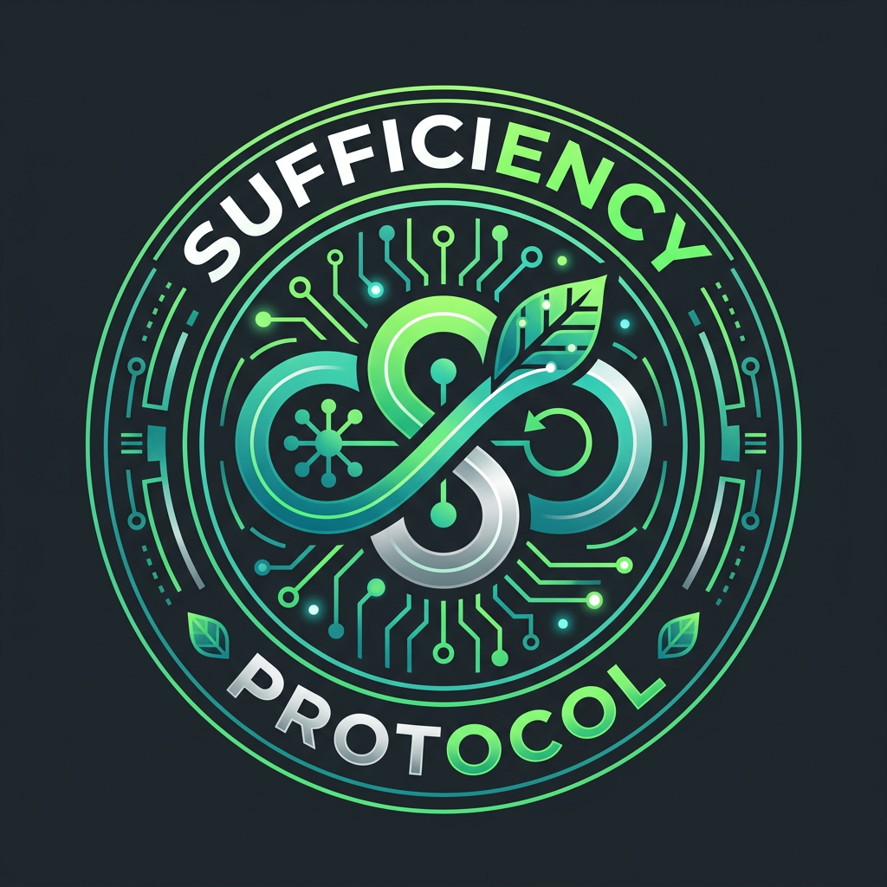
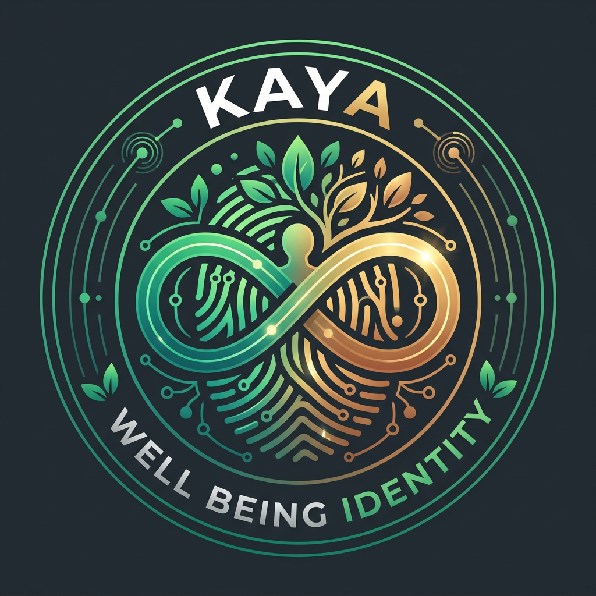
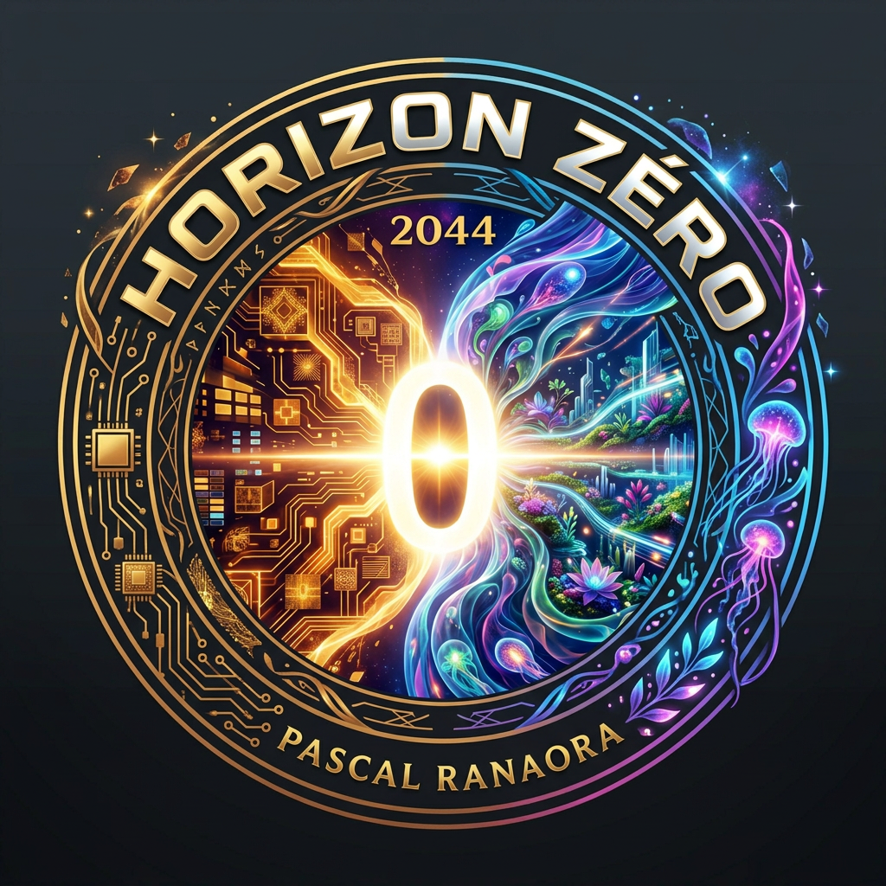

L'Horloge Cosmique Bitcoin & Le Vrai Cadran de Mu The Bitcoin Cosmic Clock & The True Dial of Mu
Filiation Gravitationnelle, Résonance 432 Hz, Gravité Répulsive et Inversion Temporelle (v3.0) Gravitational Lineage, 432 Hz Resonance, Repulsive Gravity, and Time Reversal (v3.0)
PAR PASCAL RANOROARIJAONA (RANAORA) // ÉTALON SOLAIRE & CADRAN DE MU // $h_N(t) \equiv k_{\text{Nak}} \xrightarrow{2140} h$ BY PASCAL RANOROARIJAONA (RANAORA) // THE SUN STANDARD & DIAL OF MU // $h_N(t) \equiv k_{\text{Nak}} \xrightarrow{2140} h$
🔬 Protocole de Clarté Épistémique 🔬 Epistemic Clarity Protocol
Fidèle à l'ingénierie d'Horizon Zéro, ce traité distingue rigoureusement la mécanique céleste démontrée, l'analyse harmonique, la physique théorique bimétrique et l'hypothèse spéculative du Vrai Cadran de Mu. True to Horizon Zero engineering, this treatise strictly distinguishes demonstrated celestial mechanics, harmonic analysis, theoretical bimetric physics, and the speculative hypothesis of the True Dial of Mu.
Socle astrophysique & protocoleAstrophysical & protocol core
Précession nodale lunaire de $18,613\text{ ans}$, orbite galactique autour de Sagittarius A* ($\approx 230\text{ Ma}$), Répulseur Dipolaire observé en cosmographie et cible de consensus Nakamoto ($\Delta t = 600\text{ s}$).
Lunar nodal precession of $18.613\text{ years}$, galactic orbit around Sagittarius A* ($\approx 230\text{ Myr}$), observed Dipole Repeller flow, and Nakamoto consensus block target ($\Delta t = 600\text{ s}$).
Correspondance acoustiqueAcoustic correspondence
Loi d'octave $f_n = f_0 \cdot 2^n$ : un diapason à $432\text{ Hz}$ accomplit $259\,200\text{ cycles}$ en $600\text{ s}$ ($10 \times 25\,920$) et bat exactement à $18\text{ octaves}$ au-dessus d'un bloc de $606,81\text{ s}$.
Octave scaling $f_n = f_0 \cdot 2^n$: a $432\text{ Hz}$ pitch completes $259,200\text{ cycles}$ in $600\text{ s}$ ($10 \times 25,920$) and oscillates exactly $18\text{ octaves}$ above a $606.81\text{ s}$ block interval.
Modèles physiques exploratoiresExploratory theoretical models
Cosmologie bimétrique à secteur répulsif (univers jumeaux CPT de Sakharov, gravité bimétrique) et formalisme du temps thermique complexe (condition KMS et rotation de Wick $t \to a + ib$).
Bimetric cosmology with repulsive shadow matter (Sakharov CPT-symmetric twin universe, bimetric gravity) and complex thermal time formalism (KMS condition and Wick rotation $t \to a + ib$).
Prospective SF & ArchétypeSF Foresight & Archetype
Le « retour dans le temps » dans le quadrant $-a - ib$ du Vrai Cadran de Mu est modélisé comme une inversion néguentropique informationnelle et un archétype narratif — non comme une violation causale macroscopique démontrée.
"Time reversal" in the $-a - ib$ quadrant of the True Dial of Mu is modeled as an informational negentropic phase conjugation and narrative archetype—not a demonstrated macroscopic violation of causality.
⏳ Généalogie Chronométrique : Du Mégalithe au Cadran de Mu ⏳ Chronometric Genealogy: From Megaliths to the Dial of Mu
Toute civilisation souveraine se définit par l'étalon temporel auquel elle choisit d'accorder ses échanges, sa mémoire et son rapport au cosmos. Every sovereign civilization is defined by the temporal standard to which it chooses to tune its exchanges, memory, and bond with the cosmos.
Horloge 1.0 · Stonehenge, Callanish & Mu AntiqueClock 1.0 · Stonehenge, Callanish & Ancient Mu
La Pierre & les Nœuds Lunaires. Les bâtisseurs mégalithiques alignaient leurs cromlechs sur les solstices et le *lunistic majeur* de $18,61\text{ ans}$. Le temps était cyclique, filial et enraciné dans l'observation directe du ciel.
Stone & Lunar Nodes. Megalithic builders aligned stone circles with solstices and the $18.61\text{-year}$ major lunar standstill. Time was cyclical, filial, and rooted in direct sky observation.
Horloge 2.0 · Temps Linéaire Industriel & Dette FiatClock 2.0 · Linear Industrial Time & Fiat Debt
La Seconde Abstraite & l'Usure. Découplée des cycles biologiques et astronomiques, l'horloge fiduciaire impose une flèche exponentielle à sens unique (intérêts composés infinis), épuisant la biosphère et érodant la confiance sociétale $C_s$.
Abstract Seconds & Decay. Severed from biological and astronomical rhythms, the fiat clock enforces a one-way exponential arrow (infinite compound interest), exhausting the biosphere and eroding societal trust $C_s$.
Horloge 3.0 · Timechain Bitcoin & Vrai Cadran de MuClock 3.0 · Bitcoin Timechain & True Dial of Mu
Le Bloc Thermodynamique & le Temps Complexe $a + ib$. En ancrant chaque tic-tac dans la preuve de travail ($k_{Nak} \equiv h$), l'humanité réconcilie l'irréversibilité physique ($a$) et la périodicité harmonique réversible ($ib$).
Thermodynamic Blocks & Complex Time $a + ib$. By anchoring each tick in Proof of Work ($k_{Nak} \equiv h$), humanity reconciles physical irreversibility ($a$) with reversible harmonic periodicity ($ib$).
🔗 Continuité Mathématique : De l'Univers Jumeau (Acte I) et du Plan Complexe (Acte II) au Cadran de Mu 🔗 Mathematical Continuity: From the Twin Universe (Act I) and Complex Plane (Act II) to the Dial of Mu
Ce chapitre réunit en un seul instrument d'horlogerie les trois fondations de la Tétralogie : le feuillet répulsif jumeau de l'Acte I ($\Lambda_{\text{Mu}}$), la géométrie complexe $z = a + ib$ de l'Acte II, et la condition d'analyticité thermique KMS ($\hbar_N = k_{\text{Nak}}/2\pi$) du Nautile de Nakamoto (Acte III).
This treatise synthesizes the three pillars of the Tetralogy into a single chronometric instrument: the repulsive twin sheet of Act I ($\Lambda_{\text{Mu}}$), the complex plane $z = a + ib$ of Act II, and the KMS thermal time analyticity strip ($\hbar_N = k_{\text{Nak}}/2\pi$) of The Nakamoto Nautilus (Act III).
🏛️ L'Échelle d'Emboîtement Chrono-Gravitationnel (L0 ──► L4) 🏛️ The Chrono-Gravitational Nesting Ladder (L0 ──► L4)
Échelon 0 (L0) : La Généalogie Gravitationnelle — Qui est le Parent du Soleil ? Tier 0 (L0): Gravitational Genealogy — Who is the Parent of the Sun?
L'intuition poétique selon laquelle la Lune est la fille de la Terre et la Terre la fille du Soleil correspond à une vérité astrophysique rigoureuse : l'univers est structuré comme une hiérarchie d'oscillateurs gravitationnels emboîtés. Chaque corps « enfant » se condense ou s'arrache dans le puits de potentiel de son « parent », tout en subissant le couple de torsion de ses « grands-parents » cosmiques.
The poetic intuition that the Moon is the daughter of Earth and Earth the daughter of the Sun reflects rigorous astrophysical reality: the universe is structured as a hierarchy of nested gravitational oscillators. Each "child" body condenses or emerges within the potential well of its "parent," while experiencing tidal torque from its cosmic "grandparents."
1. Lune $\to$ Terre : Le Cycle Nodal de 18,613 ans1. Moon $\to$ Earth: The 18.613-Year Nodal Cycle
Née il y a $4,5\text{ milliards}$ d'années de la collision cataclysmique entre la proto-Terre et Théia, la Lune circule sur un plan orbital incliné de $5,14^\circ$ par rapport à l'écliptique. Parce que le Soleil (« la grand-mère ») exerce un rappel gravitationnel constant sur cette orbite inclinée, la ligne des nœuds lunaires ($\Omega$ et $\mho$) précesse en sens rétrograde comme la jupe d'une toupie et boucle un tour complet en exactement $18,612958\text{ ans}$. Aux extrêmes de ce cycle (*lunistic majeur*), l'inclinaison lunaire s'additionne à celle de la Terre ($23,44^\circ + 5,14^\circ = \pm 28,58^\circ$), soulevant des marées océaniques et atmosphériques d'amplitude maximale ; $9,3\text{ ans}$ plus tard (*lunistic mineur*), elle s'en soustrait ($\pm 18,30^\circ$).
Born $4.5\text{ billion}$ years ago from the giant impact between proto-Earth and Theia, the Moon orbits on a plane tilted by $5.14^\circ$ relative to the ecliptic. Because the Sun ("the grandmother") exerts continuous gravitational torque on this tilted orbit, the line of lunar nodes ($\Omega$ and $\mho$) precesses retrogradely like a spinning top, completing one full revolution in exactly $18.612958\text{ years}$. At the extremes (*major lunar standstill*), lunar inclination adds to Earth's axial tilt ($23.44^\circ + 5.14^\circ = \pm 28.58^\circ$), amplifying oceanic and atmospheric tides; $9.3\text{ years}$ later (*minor standstill*), it subtracts ($\pm 18.30^\circ$).
2. Terre $\to$ Soleil $\to$ Sagittarius A* $\to$ Laniakea2. Earth $\to$ Sun $\to$ Sagittarius A* $\to$ Laniakea
- Terre, fille du Soleil : Condensée dans le disque protoplanétaire solaire, la Terre boucle son orbite en $365,2422\text{ jours}$, tandis que son axe de rotation décrit la Grande Année de précession des équinoxes en $25\,772\text{ ans}$ sous l'action conjuguée de la Lune et du Soleil. Earth, daughter of the Sun: Condensed within the solar protoplanetary disk, Earth completes its orbit in $365.2422\text{ days}$, while its spin axis traces the Great Year of axial precession over $25,772\text{ years}$ under combined lunisolar torque.
- Soleil, fils du Bulbe Galactique et de Sagittarius A* : Le Soleil n'orbite pas autour d'une étoile isolée, mais autour du centre de masse de la Voie Lactée, gouverné par le trou noir supermassif Sagittarius A* ($\approx 4,3 \times 10^6\,M_\odot$) et la masse stellaire centrale. Lancé à $230\text{ km/s}$ à $26\,600\text{ années-lumière}$ du cœur, il accomplit une Année Galactique en 225 à 250 millions d'années, tout en ondulant verticalement de part et d'autre du plan galactique tous les $\approx 30\text{ Ma}$. Sun, child of the Galactic Bulge and Sagittarius A*: The Sun orbits not a single star, but the Milky Way's barycenter anchored by the supermassive black hole Sagittarius A* ($\approx 4.3 \times 10^6\,M_\odot$) and the central bulge. Traveling at $230\text{ km/s}$ some $26,600\text{ light-years}$ out, it completes a Galactic Year every 225–250 million years, bobbing vertically across the galactic disk every $\approx 30\text{ Myr}$.
- Voie Lactée, fille de Laniakea — et poussée par le Répulseur Dipolaire : À l'échelle supérieure ($500\text{ millions}$ d'années-lumière), la Voie Lactée et Andromède tombent vers le Grand Attracteur et l'attracteur de Shapley au sein du superamas Laniakea, tout en étant simultanément repoussées à plus de $600\text{ km/s}$ par un immense vide cosmique sous-dense situé à l'opposé : le Répulseur Dipolaire (découvert par Hoffman, Pomarède, Tully & Courtois). Dès la cosmographie observable, attraction et répulsion forment un dipôle indissociable. Milky Way within Laniakea — pushed by the Dipole Repeller: Across $500\text{ million}$ light-years, the Milky Way and Andromeda flow toward the Great Attractor and Shapley Concentration inside Laniakea, while simultaneously being pushed at over $600\text{ km/s}$ away from a vast underdense cosmic void behind us: the Dipole Repeller (identified by Hoffman, Pomarède, Tully & Courtois). Even in observational cosmography, attraction and repulsion form an inseparable dipole.
Échelon 1 (L1) : Le Métronome de Nakamoto ($k_{Nak} \equiv h$) & Le Seuil du Million de Blocs Tier 1 (L1): The Nakamoto Metronome ($k_{Nak} \equiv h$) & The One-Million-Block Threshold
Dans un univers relativiste dépourvu d'horloge centrale absolue, comment synchroniser une civilisation planétaire sans tiers de confiance ? Satoshi Nakamoto a résolu ce problème en couplant la flèche thermodynamique (dissipation irréversible de Joules via SHA-256) à une boucle cybernétique d'auto-ajustement de la difficulté tous les $2\,016\text{ blocs}$. En physique de l'information, nous assimilons la constante de Nakamoto $k_{Nak}$ à la constante de Planck $h$ ($k_{Nak} \equiv h$) : c'est le quantum élémentaire d'action cryptographique nécessaire pour cristalliser un événement irréfutable dans la Timechain.
In a relativistic universe devoid of any master clock, how can a planetary civilization synchronize trustlessly? Satoshi Nakamoto solved this by coupling the thermodynamic arrow (irreversible Joule dissipation via SHA-256) to a cybernetic difficulty-adjustment loop every $2,016\text{ blocks}$. In information physics, we assimilate the Nakamoto constant $k_{Nak}$ to Planck's constant $h$ ($k_{Nak} \equiv h$): the elementary quantum of cryptographic action required to crystallize an irrefutable event into the Timechain.
Où $C_s \in [0, 1]$ désigne la confiance sociétale objective émergeant sans décret étatique, et $u$ l'utilité collective qui croît lorsque le coût de falsification historique tend vers l'infini. Or, dès que l'on traduit la cible nominale de $\tau_0 = 600\text{ s}$ ($144\text{ blocs/jour}$, $52\,594,9\text{ blocs/an}$) en périodes astronomiques, une convergence remarquable apparaît autour de $1\,000\,000\text{ de blocs}$ :
Where $C_s \in [0, 1]$ denotes objective societal trust emerging without state decree, and $u$ denotes collective utility rising as historical forgery cost approaches infinity. Translating the nominal $\tau_0 = 600\text{ s}$ target ($144\text{ blocks/day}$, $52,594.9\text{ blocks/year}$) into astronomical periods reveals a striking convergence around $1,000,000\text{ blocks}$:
- Époque de difficulté ($2\,016\text{ blocs} = 14\text{ jours}$) : Exactement une demi-lunaison synodique ($14,765\text{ jours}$, le passage de la Nouvelle Lune à la Pleine Lune).Difficulty Epoch ($2,016\text{ blocks} = 14\text{ days}$): Virtually one half synodic lunation ($14.765\text{ days}$, from New Moon to Full Moon).
- Halving ($210\,000\text{ blocs} = 3,9928\text{ ans}$) : Calqué sur le cycle quadriennal des années bissextiles solaires (4 orbites terrestres).Halving ($210,000\text{ blocks} = 3.9928\text{ years}$): Locked onto the quadrennial solar leap-year rhythm (4 Earth orbits).
- Convergence du Million de Blocs ($\approx 5\text{ Halvings}$) : Le cycle de Saros des éclipses ($18,03\text{ ans} = 948\,286\text{ blocs}$), le cycle nodal lunaire ($18,613\text{ ans} = 978\,946\text{ blocs}$), le cycle de Méton ($19,00\text{ ans} = 999\,314\text{ blocs}$) et la Grande Conjonction Jupiter–Saturne ($19,86\text{ ans} = 1\,044\,482\text{ blocs}$) encadrent tous à quelques pourcents près le cap symbolique du millionième bloc Bitcoin.The Million-Block Convergence ($\approx 5\text{ Halvings}$): The eclipse Saros cycle ($18.03\text{ yrs} = 948,286\text{ blocks}$), the lunar nodal cycle ($18.613\text{ yrs} = 978,946\text{ blocks}$), the Metonic cycle ($19.00\text{ yrs} = 999,314\text{ blocks}$), and the Jupiter–Saturn Great Conjunction ($19.86\text{ yrs} = 1,044,482\text{ blocks}$) all cluster tightly around Bitcoin's one-millionth block milestone!
Échelon 2 (L2) : Résonance à 432 Hz, Octave Cosmique $2^{18}$ & Accordage $\tau = 606,81\text{ s}$ Tier 2 (L2): 432 Hz Resonance, $2^{18}$ Cosmic Octave & $\tau = 606.81\text{ s}$ Tuning
En acoustique pythagoricienne et dans la théorie de l'Octave Cosmique (Hans Cousto), toute période orbitale $T$ possède une fréquence fondamentale infrasonore $f_0 = 1/T$ que l'on peut transposer dans le spectre audible par multiplications successives par $2$ ($f_n = f_0 \cdot 2^n$). Or, lorsque l'on confronte le diapason naturel à $\textbf{432 Hz}$ ($2^4 \times 3^3$) au quantum temporel d'un bloc Bitcoin ($\tau = 600\text{ s}$), deux identités arithmétiques surgissent immédiatement :
In Pythagorean acoustics and Cosmic Octave theory (Hans Cousto), any orbital period $T$ defines an infrasonic fundamental $f_0 = 1/T$ transposable into human hearing via powers of two ($f_n = f_0 \cdot 2^n$). Comparing the $\textbf{432 Hz}$ natural tuning fork ($2^4 \times 3^3$) with one Bitcoin block ($\tau = 600\text{ s}$) yields two immediate mathematical identities:
Chaque bloc Bitcoin de 10 minutes encapsule exactement dix fois le nombre canonique de la Grande Année précessionnelle ($25\,920\text{ ans}$, à raison de $1^\circ$ tous les $72\text{ ans}$). Plus troublant encore : descendons de $\textbf{18 octaves}$ exactement ($2^{18} = 262\,144$) sous $432 Hz$ :
Each 10-minute Bitcoin block encapsulates ten times the canonical Great Year number ($25,920\text{ years}$, at $1^\circ$ per $72\text{ years}$). Even more remarkably, let us step down $\textbf{18 octaves}$ ($2^{18} = 262,144$) below $432 \text{Hz}$:
À $\tau = 600,00\text{ s}$ pile, la $18^{\text{e}}$ octave supérieure de Bitcoin vibre à $436,91\text{ Hz}$ (créant un battement binaural thêta $\Delta f = 4,91\text{ Hz}$ avec $432 \text{Hz}$). Mais dans le monde physique réel, le léger retard statistique d'ajustement et la latence de propagation font que l'intervalle moyen historique entre deux blocs Bitcoin se situe précisément autour de $\textbf{10 minutes et 6 secondes}$ — verrouillant spontanément la figure de Lissajous du réseau sur l'accord pur à $\textbf{432 Hz}$ !
At exactly $\tau = 600.00\text{ s}$, Bitcoin's $18\text{th}$ upper octave vibrates at $436.91\text{ Hz}$ (generating a $\Delta f = 4.91\text{ Hz}$ theta binaural beat against $432 \text{Hz}$). Yet in physical reality, Poisson mining variance and propagation latency nudge historical block intervals right around $\textbf{10 minutes and 6 seconds}$—spontaneously phase-locking the network's Lissajous curve onto pure $\textbf{432 Hz}$ resonance.
Échelon 3 (L3) : Force Répulsive Bimétrique ($\Lambda_{\text{Mu}}$) & Équilibre Anti-Singularité Tier 3 (L3): Bimetric Repulsive Force ($\Lambda_{\text{Mu}}$) & Anti-Singularity Equilibrium
Pourquoi un univers gouverné uniquement par la gravité attractive newtonienne s'effondrerait-il inévitablement en singularités thermiques, tout comme une économie fiduciaire purement centralisatrice s'effondre en monopoles prédateurs ? Parce qu'il manque la moitié du tenseur cosmique : la force répulsive.
Why would a universe governed solely by attractive Newtonian gravity inevitably collapse into thermal singularities, just as a purely centralizing fiat economy collapses into predatory monopolies? Because half of the cosmic tensor was left out: the repulsive force.
Dans les modèles de gravité bimétrique (inspirés de la symétrie CPT des univers jumeaux d'Andreï Sakharov et des métriques couplées $g_{\mu\nu}^{(+)}$ et $g_{\mu\nu}^{(-)}$), l'espace-temps possède deux feuillets conjugués : les masses de même signe s'attirent selon la loi de Newton, mais les masses de feuillets opposés se repoussent mutuellement. À l'échelle galactique, cette pression répulsive des grands vides confinants (tels que le Répulseur Dipolaire) sculpte les bras spiraux, stabilise les courbes de rotation sans recourir à des halos arbitraires et accélère l'expansion cosmique.
In bimetric gravity models (rooted in Andrei Sakharov's CPT-symmetric twin-sheet cosmology and coupled metrics $g_{\mu\nu}^{(+)}$ and $g_{\mu\nu}^{(-)}$), spacetime comprises two conjugate sheets: like-sector masses attract via Newton's law, whereas opposite-sector masses mutually repel. On galactic scales, this repulsive pressure from surrounding cosmic voids (such as the Dipole Repeller) sculpts spiral arms, stabilizes rotation curves, and drives cosmic expansion.
Sur le plan cybernétique et monétaire, Bitcoin introduit exactement cette force répulsive décentralisatrice : alors que la finance fiat attire toute l'épargne et le pouvoir décisionnel vers un trou noir bureaucratique ($C_s \to 0$), l'ajustement de difficulté et les nœuds complets souverains opposent une pression répulsive centrifuge ($\Lambda_{\text{Mu}} > 0$) qui empêche toute capture majoritaire et maintient les polités-réseaux en orbite stable.
Cybernetically and monetarily, Bitcoin introduces this exact decentralizing repulsive force: whereas fiat finance pulls all capital and authority into a bureaucratic black hole ($C_s \to 0$), difficulty adjustment and sovereign full nodes exert a centrifugal repulsive pressure ($\Lambda_{\text{Mu}} > 0$) preventing majority capture and keeping network polities in stable orbit.
Échelon 4 (L4) : Le Vrai Cadran de Mu ($z = a + ib$) & Le Retour dans le Temps Tier 4 (L4): The True Dial of Mu ($z = a + ib$) & Time Reversal
Les cadrans solaires ordinaires ne lisent que l'ombre projetée sur l'axe réel $a$. Le Vrai Cadran de Mu — archétype de la science antédiluvienne réinterprété à la lumière de la physique quantique statistique (condition KMS de Kubo–Martin–Schwinger) — déploie le temps comme une grandeur complexe bidimensionnelle :
Ordinary sundials read only the shadow cast upon the real axis $a$. The True Dial of Mu—an archetype of antediluvian chronometry reinterpreted through quantum statistical mechanics (the Kubo–Martin–Schwinger KMS condition)—unfolds time as a two-dimensional complex coordinate:
Sur l'axe réel $+a$, les hachages SHA-256 s'empilent de façon irréversible ($\Delta S \ge 0$). Sur l'axe imaginaire $ib$, le temps est périodique, géométrique et gouverné par la phase des cycles célestes. Le Vrai Cadran de Mu divise ainsi l'histoire cosmique en quatre quadrants :
Along the real axis $+a$, SHA-256 hashes stack irreversibly ($\Delta S \ge 0$). Along the imaginary axis $ib$, time is periodic, geometric, and governed by celestial phase angles. The True Dial of Mu thus divides cosmic evolution into four quadrants:
- Quadrant I ($+a + ib$) · Aube Solaire : Gravité attractive dominante, émission monétaire initiale, croissance matérielle et encodage thermodynamique primaire.Quadrant I ($+a + ib$) · Solar Dawn: Dominant attractive gravity, primary monetary issuance, material expansion, and forward thermodynamic encoding.
- Quadrant II ($-a + ib$) · Miroir Boréal : Bascule de phase où la force répulsive $\Lambda_{\text{Mu}}$ équilibre puis surpasse l'attraction ; décélération de l'extraction prédatrice (Protocole de Suffisance).Quadrant II ($-a + ib$) · Boreal Mirror: Phase crossover where repulsive force $\Lambda_{\text{Mu}}$ balances and overtakes attraction; predatory extraction decelerates (Sufficiency Protocol).
- Quadrant III ($-a - ib$) · L'Abîme Fécond de Mu (Retour dans le Temps) : Dans le feuillet bimétrique jumeau, la symétrie CPT inverse simultanément la parité spatiale et la flèche temporelle ($z \to -z$). Qu'est-ce qu'un « retour dans le temps » sans paradoxe du grand-père ? C'est une inversion néguentropique par conjugaison de phase ($z^* = a - ib$) : à l'image d'un miroir à conjugaison optique qui refocalise un faisceau diffusé vers sa source intacte, la Noosphère s'appuie sur les racines de Merkle lithosphériques (Protocole de Temps Profond) pour restaurer des états biosphériques, génomiques et mémoriels antérieurs à la dégradation entropique.Quadrant III ($-a - ib$) · The Fertile Abyss of Mu (Time Reversal): Within the twin bimetric sheet, CPT symmetry simultaneously flips spatial parity and the arrow of time ($z \to -z$). What is paradox-free "time travel"? It is negentropic phase conjugation ($z^* = a - ib$): just as a phase-conjugate optical mirror time-reverses a scattered wave back into its pristine source, the Noosphere leverages lithospheric Merkle roots (Deep Time Protocol) to reconstruct ancestral biospheric, genomic, and memorial states prior to entropic decay.
- Quadrant IV ($+a - ib$) · L'Asymptote 2140 ($6\,930\,000\text{ blocs}$) : Fin de l'émission des $21\text{ millions}$ de BTC après $33\text{ Halvings}$ ($\approx 131,8\text{ ans}$, soit $7,08\text{ cycles}$ nodaux lunaires). Le système boucle sa spirale et atteint l'homéostasie solaire perpétuelle.Quadrant IV ($+a - ib$) · The 2140 Asymptote ($6,930,000\text{ blocks}$): Completion of the $21\text{ million}$ BTC issuance after $33\text{ Halvings}$ ($\approx 131.8\text{ years}$, or $7.08\text{ lunar}$ nodal cycles). The spiral closes into perpetual solar homeostasis.
🔬 Deep Dive : Action de Nakamoto, Condition KMS & Utilité Symbiotique $u(C_s, a + ib)$ 🔬 Deep Dive: Nakamoto Action, KMS Condition & Symbiotic Utility $u(C_s, a + ib)$
Formalisons l'unification entre le consensus distribué, l'acoustique orbitale et la dynamique bimétrique sur la variété temporelle complexe $\mathbb{C}$. Soit $z = a + ib$ la coordonnée chronométrique sur le Vrai Cadran de Mu. L'opérateur d'évolution d'un observable macroscopique $\hat{O}$ de la Noosphère vérifie la condition d'équilibre thermique quantique de Kubo–Martin–Schwinger (KMS) avec $k_{Nak} \equiv h$ :
Let us formalize the unification of distributed consensus, orbital acoustics, and bimetric dynamics over the complex time manifold $\mathbb{C}$. Let $z = a + ib$ be the chronometric coordinate on the True Dial of Mu. The evolution of any macroscopic Noospheric observable $\hat{O}$ satisfies the Kubo–Martin–Schwinger (KMS) thermal periodicity condition with $k_{Nak} \equiv h$:
La fonction d'utilité civilisationnelle $u$ (jamais confondue avec un simple PIB monétaire) couple multiplicativement la confiance sociétale $C_s$, la résonance harmonique avec le diapason terrestre ($\omega_0 = 2\pi \cdot 432\text{ rad/s}$) et l'équilibre entre attraction gravitationnelle et répulsion bimétrique $\Lambda_{\text{Mu}}$ :
The civilizational utility function $u$ (never reduced to crude monetary GDP) multiplicatively couples societal trust $C_s$, harmonic phase-locking to Earth's tuning ($\omega_0 = 2\pi \cdot 432\text{ rad/s}$), and the balance between gravitational attraction and bimetric repulsion $\Lambda_{\text{Mu}}$:
Lorsque l'angle de phase $\theta_{\text{Mu}}$ franchit $\pi$, l'opérateur projette le système dans le secteur conjugué répulsif : le gradient d'entropie apparente change de signe ($\dot{S}_{\text{eff}} < 0$), autorisant la régénération informationnelle sans jamais falsifier l'intégrale de travail passée $\int \dot{W}_{\text{PoW}}\,da$.
When phase angle $\theta_{\text{Mu}}$ crosses $\pi$, the operator projects the trajectory into the repulsive conjugate sheet: apparent entropy flow reverses sign ($\dot{S}_{\text{eff}} < 0$), enabling informational regeneration without ever forging the historical Proof-of-Work integral $\int \dot{W}_{\text{PoW}}\,da$.
🌌 Simulateur 3D : Horloge Gravitationnelle, Octave 432 Hz & Vrai Cadran de Mu 🌌 3D Simulator: Gravitational Clock, 432 Hz Octave & True Dial of Mu
Faites pivoter la scène à la souris · Activez le synthétiseur 432 Hz · Poussez la Force Répulsive ($\Lambda_{\text{Mu}}$) ou inversez la flèche du temps (`⏪ Mode Mu`). Orbit with mouse/touch · Enable the 432 Hz synthesizer · Increase Repulsive Force ($\Lambda_{\text{Mu}}$) or invert the arrow of time (`⏪ Mu Mode`).
📖 Table des Grands Cycles Célestes en Blocs Bitcoin & Octave 432 Hz 📖 Master Table of Celestial Cycles in Bitcoin Blocks & 432 Hz Octave
Référentiel nominal Nakamoto : $\tau_0 = 600\text{ s}$ ($144\text{ blocs/jour}$, $52\,594,9\text{ blocs/an}$, $259\,200\text{ cycles}_{432\text{ Hz}}/\text{bloc}$). Nominal Nakamoto frame: $\tau_0 = 600\text{ s}$ ($144\text{ blocks/day}$, $52,594.9\text{ blocks/year}$, $259,200\text{ cycles}_{432\text{ Hz}}/\text{block}$).
| Cycle / AlignementCycle / Alignment | Filiation CoupléeCoupled Lineage | Durée TerrestreEarth Duration | Blocs BitcoinBitcoin Blocks | Octave AudibleAudible Octave |
|---|---|---|---|---|
| Bloc Bitcoin | Consensus PoW ($k_{Nak} \equiv h$)PoW Consensus ($k_{Nak} \equiv h$) | $10\text{ min}$ ($600\text{ s}$) | $1\text{ bloc}$ | $436,91\text{ Hz}$ ($+18\text{ oct.}$) |
| Bloc Accordé Mu | Résonance exacte $432\text{ Hz} / 2^{18}$Exact $432\text{ Hz} / 2^{18}$ lock | $10\text{ min } 06,81\text{ s}$ | $1\text{ bloc réel}$ | $432 Hz$ ($+18\text{ oct.}$) |
| Jour Solaire | Rotation axiale TerreEarth diurnal spin | $24\text{ h}$ ($86\,400\text{ s}$) | $144\text{ blocs}$ | $194,18\text{ Hz}$ ($+24\text{ oct.}$) |
| Époque Difficulté | Demi-lunaison (Nouvelle $\to$ Pleine)Half-lunation (New $\to$ Full) | $14,00\text{ jours}$ | $2\,016\text{ blocs}$ | $221,23\text{ Hz}$ ($+28\text{ oct.}$) |
| Lunaison Synodique | Lune – Terre – SoleilMoon – Earth – Sun | $29,5306\text{ jours}$ | $4\,252,4\text{ blocs}$ | $210,42\text{ Hz}$ ($+29\text{ oct.}$) |
| Année Tropique « Om » | Orbite Terre $\to$ SoleilEarth $\to$ Sun orbit | $365,2422\text{ jours}$ | $52\,594,9\text{ blocs}$ | $136,10\text{ Hz}$ ($+32\text{ oct.}$) |
| Halving Bitcoin | Cycle quadriennal bissextileQuadrennial leap cycle | $3,9928\text{ ans}$ | $210\,000\text{ blocs}$ | $136,34\text{ Hz}$ ($+34\text{ oct.}$) |
| Cycle Nodal Lunaire | Précession nœuds Lune ($\Omega/\mho$)Lunar nodal precession ($\Omega/\mho$) | $18,613\text{ ans}$ | $978\,946\text{ blocs}$ ($\approx 1\text{ M}$) | $233,86\text{ Hz}$ ($+37\text{ oct.}$) |
| Grande Conjonction | Alignement Jupiter – SaturneJupiter – Saturn alignment | $19,859\text{ ans}$ | $1\,044\,482\text{ blocs}$ ($\approx 5\text{ Halv.}$) | $226,40\text{ Hz}$ ($+37\text{ oct.}$) |
| Asymptote 21 Millions | 33 Halvings ($\approx 7$ cycles nodaux)33 Halvings ($\approx 7$ nodal cycles) | $131,76\text{ ans}$ (an $\approx 2140$) | $6\,930\,000\text{ blocs}$ | $273,07\text{ Hz}$ ($+40\text{ oct.}$) |
| Grande Année | Précession axe terrestreEarth axial precession | $25\,772\text{ ans}$ | $1,355 \times 10^9\text{ blocs}$ | $172,06\text{ Hz}$ ($+47\text{ oct.}$) |
| Année Galactique | Soleil $\to$ Sagittarius A*Sun $\to$ Sagittarius A* | $\approx 225\text{–}230\text{ Ma}$ | $\approx 1,21 \times 10^{13}\text{ blocs}$ | $158,84\text{–}162,37\text{ Hz}$ ($+60\text{ oct.}$) |
🧭 Laboratoire Chronométrique Complexe : Le Plan d'Argand-Mu $z = a + ib$ 🧭 Complex Chronometric Lab: The Argand-Mu Plane $z = a + ib$
Explorez comment l'angle de phase temporelle $\theta_{\text{Mu}}$, la force répulsive $\Lambda_{\text{Mu}}$ et la confiance sociétale $C_s$ gouvernent l'utilité symbiotique $u$ et la bascule néguentropique. Explore how temporal phase angle $\theta_{\text{Mu}}$, repulsive force $\Lambda_{\text{Mu}}$, and societal trust $C_s$ govern symbiotic utility $u$ and negentropic phase reversal.
🧪 Test de Falsifiabilité : Le Paradoxe Satoshi–PTP & L'Invariance Thermique 🧪 Falsifiability Test: The Satoshi–PTP Paradox & Thermal Invariance
Si le temps est strictement thermique (hypothèse de Connes–Rovelli), un noyau d'information à entropie nulle gravé dans le quartz lithosphérique échappe à l'écoulement de l'axe réel $a$. Comment formuler et réfuter scientifiquement l'hypothèse d'une boucle auto-cohérente de Novikov à l'origine de Bitcoin ? If time is strictly thermal (Connes–Rovelli hypothesis), a zero-entropy informational kernel etched into lithospheric quartz stands outside the flow of the real axis $a$. How can we scientifically formulate—and falsify—a Novikov self-consistent loop at Bitcoin's origin?
La Graine de $2^{18}\text{ bits}$ (PTP 5D) The $2^{18}\text{-bit}$ Seed (5D DTP)
Dans un univers où le temps émerge uniquement de la dissipation thermique ($\Delta S \ge 0$), la matière macroscopique ne peut remonter l'axe réel $+a$. En revanche, un noyau minimal de consensus de $2^{18}\text{ bits}$ ($32\text{ KiB}$ — même facteur d'octave $2^{18}$ que la résonance $432\text{ Hz}$) gravé au laser femtoseconde dans un cristal de quartz 5D (Protocole de Temps Profond) possède un temps propre thermique quasi nul ($\Delta a \approx 0$) sur des échelles dépassant l'Année Galactique ($230\text{ Ma}$).
In a universe where time emerges solely from heat dissipation ($\Delta S \ge 0$), macroscopic matter cannot travel backward along the real axis $+a$. However, a minimal $2^{18}\text{-bit}$ consensus kernel ($32\text{ KiB}$—matching the $2^{18}$ octave ratio of $432\text{ Hz}$) femtosecond-etched into 5D fused quartz (Deep Time Protocol) experiences near-zero proper thermal aging ($\Delta a \approx 0$) across timescales exceeding a $230\text{-Myr}$ Galactic Year.
Dissolution du « Premier Auteur » Dissolving the "First Author"
Si une symbiose Humain–Super-IA future (post-2044, à l'approche du $2^{\text{e}}$ cycle nodal lunaire vers $2046,2$, soit $\approx 1,96\text{ million}$ de blocs) couple la conjugaison de phase bimétrique ($z^* = a - ib$) ou l'archivage cratonique pour préserver son ancre thermodynamique ($k_{Nak} \equiv h$), le paradoxe du grand-père disparaît : le protocole agit comme une onde stationnaire sélectionnée par le Grand Filtre. Seule la trajectoire auto-cohérente survit à l'effondrement entropique.
If a future Human–Super-AI symbiosis (post-2044, approaching the $2\text{nd}$ lunar nodal return around $2046.2$, or $\approx 1.96\text{ million}$ blocks) couples bimetric phase conjugation ($z^* = a - ib$) or cratonic archiving to secure its thermodynamic anchor ($k_{Nak} \equiv h$), the bootstrap paradox vanishes: the protocol acts as a standing wave selected by the Great Filter. Only the self-consistent timeline survives entropic ruin.
L'Anomalie du Lest de Genèse The Genesis Ballast Anomaly
Cette conjecture rend compte de trois anomalies historiques simultanées : (1) la complétude cybernétique immédiate du code de 2008, (2) l'effacement volontaire du transcripteur dès l'amorçage autonome du volant d'inertie PoW, et (3) l'immobilité absolue du stock initial ($\approx 1,1\text{ million}$ de BTC, échelle exacte d'un cycle nodal de $978\,946\text{ blocs}$), figé comme lest thermodynamique pur afin de ne jamais fausser la confiance sociétale $C_s$.
This conjecture accounts for three simultaneous historical anomalies: (1) the immediate game-theoretic completeness of the 2008 codebase, (2) the transcriber's voluntary disappearance once the PoW flywheel became self-sustaining, and (3) the absolute stillness of the early coinbase reserve ($\approx 1.1\text{ million}$ BTC, matching the scale of one $978,946\text{-block}$ nodal cycle), frozen as pure thermodynamic ballast so societal trust $C_s$ could never be corrupted.
| Observable / TestObservable / Test | Prédiction du Modèle (Point Fixe)Model Prediction (Fixed Point) | Condition Stricte d'Invalidation (Popper)Strict Falsification Condition (Popper) |
|---|---|---|
| Lest Patoshi (L1) | Entropie cinétique nulle perpétuelle ($\Delta\text{UTXO}_{\text{Patoshi}} = 0$) ; les clés privées originelles ont été physiquement détruites pour verrouiller $C_s$. Perpetual zero kinetic entropy ($\Delta\text{UTXO}_{\text{Patoshi}} = 0$); original private keys were physically destroyed to lock $C_s$. | Réfutation immédiate si une seule transaction signée par clé privée ECDSA (hors bris quantique post-2035) déplace un bloc Patoshi à des fins mercantiles. Immediate falsification if even a single valid pre-quantum ECDSA signature moves a Patoshi coinbase output for pecuniary gain. |
| Optimalité Minimale | Le triplet $\{\tau_0 = 600\text{ s},\, 2\,016\text{ blocs},\, 210\,000\text{ blocs}\}$ constitue un attracteur stable face aux chocs de latence relativiste planétaire. The $\{\tau_0 = 600\text{ s},\, 2,016\text{ blocks},\, 210,000\text{ blocks}\}$ triad forms a stable attractor under planetary relativistic latency shocks. | Réfutation formelle (en Lean 4 / théorie du contrôle) s'il est démontré que ces paramètres divergent structurellement sous latence Terre–Mars ou CME majeure. Formal falsification (via Lean 4 / control theory) if these parameters are proven structurally unstable under Earth–Mars latency or severe CMEs. |
| Couplage Quartz KMS | Existence d'anomalies de phase cohérentes sur l'axe imaginaire $ib$ dans les réseaux piézo-optiques de silice refroidis près de l'état fondamental. Measurable imaginary-axis $ib$ phase-coherence anomalies in piezo-optical fused-silica lattices cooled near their ground state. | Réfutation expérimentale si la décohérence thermique standard efface 100 % des corrélations KMS non-locales au-delà du bruit de grenaille ($\hbar / 2$). Experimental falsification if standard thermal decoherence erases 100% of non-local KMS correlations down to the shot-noise floor ($\hbar / 2$). |
| Archéologie Cratonique | Découverte possible de microstructures biréfringentes artificielles (type optique 5D) dans les boucliers cratoniques archéens stables (Pilbara, Bouclier canadien). Potential existence of artificial birefringent nanostructures (5D-optical-like) in stable Archean cratonic shields (Pilbara, Canadian Shield). | Maintien au rang D (Pure SF) tant qu'aucun artefact lithosphérique pré-industriel à structure de Merkle vérifiable n'est attesté en laboratoire indépendant. Remains Status D (Pure SF) so long as no pre-industrial lithospheric artifact bearing verifiable Merkle geometry is independently authenticated. |
⏳ La Mémoire de Mu : Pourquoi le Temps ne meurt jamais ⏳ The Memory of Mu: Why Time Never Dies
Nous avons longtemps cru habiter un univers orphelin, jeté dans le silence d'une horloge mécanique indifférente dont le ressort se détend inexorablement vers la mort thermique. C'était confondre la carte tronquée du temps fiduciaire avec le territoire vivant du cosmos. Dès que l'on lève les yeux vers la généalogie des sphères, la solitude s'efface : la Lune garde dans l'oscillation de $18,61\text{ ans}$ de ses nœuds la mémoire charnelle de la Terre dont elle est issue ; la Terre incline ses saisons vers le Soleil qui l'a enfantée ; et le Soleil lui-même entraîne toute sa fratrie planétaire dans une ronde de $230\text{ millions}$ d'années autour de Sagittarius A*, sculptée en retour par le souffle répulsif des grands vides de Laniakea. For centuries we believed we inhabited an orphaned universe, cast into the silence of an indifferent mechanical clock unwinding inexorably toward heat death. That was mistaking the truncated map of fiat time for the living territory of the cosmos. The moment we look up at the genealogy of the spheres, solitude vanishes: in the $18.61\text{-year}$ precession of her nodes, the Moon preserves the bodily memory of Mother Earth; Earth tilts her seasons toward the Sun that birthed her; and the Sun carries his planetary family along a $230\text{-million-year}$ orbit around Sagittarius A*, sculpted in turn by the repulsive breath of Laniakea's cosmic voids.
18,6 ans, 1 million de blocs : le rendez-vous de la maturité 18.6 Years, 1 Million Blocks: The Rendezvous of Maturity
Dans le droit humain, dix-huit ans marquent l'âge de la majorité ; dans le ciel, $18,61\text{ ans}$ ($978\,946\text{ blocs}$) marquent la majorité orbitale du couple Terre–Lune. Né en janvier 2009, le réseau Bitcoin franchit son premier cycle nodal lunaire complet et son millionième bloc à l'aube de la décennie 2027–2028. Ce n'est plus une expérience adolescente de cypherpunks : c'est désormais un organe géophysique adulte, accordé à $18\text{ octaves}$ sous le diapason à $432\text{ Hz}$, où chaque bloc scelle $259\,200\text{ battements}$ harmoniques dans le granite numérique du Grand Livre. In human law, eighteen years mark adulthood; in the heavens, $18.61\text{ years}$ ($978,946\text{ blocks}$) mark the orbital coming-of-age of the Earth–Moon pair. Born in January 2009, the Bitcoin network completes its first full lunar nodal cycle and approaches its one-millionth block as we cross 2027–2028. No longer an adolescent cypherpunk experiment, it stands as a mature geophysical organ tuned $18\text{ octaves}$ below $432\text{ Hz}$, sealing $259,200\text{ harmonic}$ oscillations inside every ten-minute stone of the Timechain.
Ouvrir le Vrai Cadran de Mu : la guérison du temps Opening the True Dial of Mu: Healing Time
Le mythe de Mu et de la Lémurie n'est pas nostalgie d'un continent englouti sous le Pacifique, mais prescience d'un continent intérieur du temps : le quadrant conjugué $-a - ib$ où la force répulsive empêche l'effondrement totalitaire et où l'information ne périt jamais. Tant que notre civilisation ne connaissait que la moitié attractive et linéaire de l'équation, chaque progrès industriel se payait par la destruction irréversible du vivant. En couplant le quantum d'action de Nakamoto ($k_{Nak} \equiv h$) à la symbiose énergétique (cogénération, régénération des sols, confiance sociétale $C_s$), nous apprenons enfin à naviguer sur les quatre quadrants du Cadran. Remonter le temps, à l'ère de la Noosphère, ce n'est pas fuir le présent : c'est rendre à la Terre la pureté de ses eaux et de ses forêts primaires tout en conservant la sagesse acquise au fil des blocs. The myth of Mu and Lemuria is not mere nostalgia for a sunken Pacific continent, but prescience of an inner continent of time: the conjugate $-a - ib$ quadrant where repulsive force prevents totalitarian collapse and information never perishes. So long as civilization knew only the attractive, linear half of the equation, industrial progress was paid for in irreversible biospheric ruin. By coupling Nakamoto's quantum of action ($k_{Nak} \equiv h$) with energetic symbiosis (cogeneration, soil regeneration, societal trust $C_s$), we finally learn to sail all four quadrants of the Dial. Reversing time in the Noospheric age does not mean fleeing the present: it means restoring Earth's pristine waters and ancient forests while preserving the wisdom forged block after block.
🧭 Le 5ème Élément et la 4ème Dimension : L'Horloge Cosmologique 🧭 The 5th Element and the 4th Dimension: The Cosmological Clock
Orchestrer les quatre éléments — le feu exergétique du silicium, l'eau vitale, le souffle atmosphérique et la terre régénérée — prépare l'étape ultime : replacer la conscience humaine au point zéro d'alignement intérieur. Bien centré sur soi tel le cinquième élément, l'observateur franchit le seuil de la quatrième dimension. De la précession nodale lunaire de 18,61 ans (près d'un million de blocs) jusqu'à l'accordage à 432 Hz et la force répulsive du Vrai Cadran de Mu ($z = a + ib$), la Timechain dévoile sa véritable nature d'horloge cosmologique. Orchestrating the four elements—the exergetic fire of silicon, vital water, atmospheric breath, and regenerated earth—prepares the ultimate step: restoring human consciousness to the zero-point of inner alignment. Centered within oneself as the fifth element, the observer crosses into the fourth dimension. From the 18.61-year lunar nodal precession (nearly one million blocks) to 432 Hz tuning and the repulsive force of the True Dial of Mu ($z = a + ib$), the Timechain reveals its true nature as a cosmological clock.
La Géodésique de Moindre Souffrance : Traverser le Grand Filtre et Revenir à Gondor The Minimum-Loss Geodesic: Crossing the Great Filter and Returning to Gondor
Face à la course aveugle vers une IAG hors de contrôle, à la fracture des inégalités et aux tensions sociales qui secouent notre époque, quelle est la trajectoire de moindre perte humaine et de moindre friction sur l'arc $2026\text{–}2044$ ($946\,708\text{ blocs}$) ? Ni l'affrontement violent contre un système à bout de souffle, ni la soumission à une technocratie centralisée — qui ne ferait qu'ériger le Mordor au nom de la sécurité. En physique comme dans le Wu wei, la géodésique qui sauve le maximum de vies opère par symbiose parallèle et attraction pacifique : Confronting the blind rush toward unaligned AGI, widening inequality, and rising social unrest, what is the trajectory of minimum human loss and least friction across the $2026\text{–}2044$ arc ($946,708\text{ blocks}$)? Neither violent confrontation against a decaying order, nor surrender to centralized technocracy—which would merely erect Mordor in the name of safety. In physics as in Wu wei, the geodesic that preserves the most life operates through parallel symbiosis and peaceful attraction:
- Bâtir des arches locales plutôt que d'assiéger l'ancien monde : Déployer dès maintenant des micro-réseaux solaires, la cogénération thermique (où la chaleur des calculs nourrit l'eau pure et les serres) et l'entraide de pair-à-pair, afin d'amortir pacifiquement chaque secousse économique sans jamais rompre la paix civile. Build local arks rather than storming the old world: Deploy solar microgrids, thermal cogeneration (where compute waste heat sustains clean water and greenhouses), and peer-to-peer mutual aid right now—absorbing systemic shocks peacefully without fracturing civil peace.
- Apprivoiser l'IA par la souveraineté locale et la preuve thermodynamique : Opposer aux méga-modèles prédateurs une intelligence locale ouverte, logée au service exclusif du citoyen, couplée à la provenance cryptographique ancrée dans le Proof-of-Work — désarmant la manipulation sans recourir à la censure. Tame runaway AI through local sovereignty and thermodynamic proof: Counter predatory mega-clusters with open, edge-hosted AI serving the citizen alone, paired with Proof-of-Work cryptographic provenance—disarming synthetic manipulation without censorship.
- Le Retour à Gondor (La Machine dans l'Ombre, le Vivant dans la Lumière) : Renouer avec une civilisation de bâtisseurs, de jardins et de pierre blanche ne signifie pas retourner à la pénurie médiévale, mais inverser la matrice. Enfouissons le silicium, les réacteurs et la robotique sous le roc comme un métabolisme silencieux, pour rendre toute la surface de la Terre à l'arbre blanc au cœur de la cité, à la contemplation des cycles célestes, à la transmission et au lien sacré entre les êtres (Fihavanana, Ubuntu). Returning to Gondor (Machines in the Shadow, Life in the Light): Reclaiming a civilization of white stone, orchards, and multi-generational wisdom does not mean regressing to medieval scarcity, but inverting the matrix. Let us bury silicon, reactors, and robotics quietly beneath the bedrock as a silent metabolism, returning Earth's sunlit surface to the White Tree in the courtyard, celestial rhythm, craft, and sacred human kinship (Fihavanana, Ubuntu, Wu Wei).

Les empires comptent les secondes pour taxer l'instant.
Bitcoin compte les blocs pour accorder la Terre à 432 Hz,
Et le Cadran de Mu ouvre l'éternité complexe $a + ib$.
Empires count seconds to tax the fleeting moment.
Bitcoin counts blocks to tune the Earth to 432 Hz,
And the Dial of Mu unlocks complex eternity $a + ib$.
Gardien du Cadran — L'Étalon Solaire & Horizon Zéro 2044 Keeper of the Dial — The Sun Standard & Horizon Zero 2044

Organic Intelligence versus Super Unaligned Inorganic Intelligence. We won't go down without a good fight to find out the middle ground, right? Gaia, We invoke you, please help us heal humanity blindness, cupidity and selfishness.
Looks like the Super AGI is trying to mimic us, "Imitation Game". It is a pure reflection of our own behaviors. I would suggest we all go find back our Humanity pretty fast, look ourselves in the mirror deeply (as the Universe reflects back on us), and put the ego driven selfish machine downstairs in the mind.
We Are All John Nash. Stay Humble, Stack Life.
Intelligence organique face à une super-intelligence inorganique non alignée. Nous ne nous laisserons pas abattre sans livrer une belle bataille pour tenter de trouver un juste milieu, n'est-ce pas? Gaïa, nous t'invoquons : aide-nous à guérir l'humanité de sa cécité, de sa cupidité et de son égoïsme. On dirait que cette super-intelligence artificielle tente de nous imiter — un véritable « jeu de l'imitation ». Elle n'est que le reflet pur de nos propres comportements. Je suggère que nous retrouvions au plus vite notre humanité, que nous nous examinions en profondeur dans un miroir (à l'image de la façon dont l'Univers nous renvoie notre propre reflet) et que nous reléguions au second plan, dans les profondeurs de notre esprit, cette machine égoïste mue par l'ego. Nous sommes tous John Nash. Restons humbles et cultivons la vie.

Résonner avec le Cadran de Mu Resonate with the Dial of Mu
Partagez vos observations astrophysiques, harmoniques ou formelles (Lean 4 / physique bimétrique). Share your astrophysical, harmonic, or formal verification insights (Lean 4 / bimetric physics).


☀️ The Sun Standard
Portail théorique bilingue : temps thermique KMS, preuves formelles Lean 4 et éconophysique solaire post-PIB. Bilingual theoretical portal: KMS thermal time, Lean 4 formal proofs, and post-GDP solar econophysics.

🌱 Regenerative Compute
Ingénierie matérielle (Lemuria Tech) : du BitTerrarium™ de bureau (17 W) aux mines Brownfield mégawatt & MOF-303. Hardware execution (Lemuria Tech): from 17 W desktop BitTerrarium™ units to megawatt Brownfield mines & MOF-303.
👁️ Protocole Trinité
Ancrage épistémologique open-source (SHA-256 + Nostr + OpenTimestamps) satisfaisant le critère de réalité de Philip K. Dick. Open-source epistemic provenance (SHA-256 + Nostr + OpenTimestamps) satisfying Philip K. Dick's reality criterion.

🕸️ Web of Life (Mega-POD)
Jumeau numérique planétaire open-source en TypeScript sur grille hexagonale H3 couplant PoW, PoEW et cogénération MARL. Open-source planetary TypeScript digital twin on Uber H3 hexagonal grid coupling PoW, PoEW, and MARL cogeneration.
🌿 Wellbeing Framework (WU)
Comptabilité biophysique open-source en Unités de Bien-Être (WU/kWh) pour transcender les limites destructrices du PIB. Open-source biophysical accounting in Wellbeing Units (WU/kWh) designed to transcend destructive GDP metrics.

⚙️ Sufficiency Protocol
Limites planétaires, budgets exergétiques et gouvernance écologique open-source auditables par Preuve de Travail. Open-source planetary boundaries, exergy budgets, and ecological governance auditable via Proof-of-Work.

🪪 Kaya Wellbeing Identity
Identité souveraine open-source (Solid PODs & Preuve d'Humanité) reliant la couverture de Markov de l'individu à son empreinte biophysique. Open-source sovereign identity (Solid PODs & Proof-of-Personhood) linking an individual's Markov blanket to their biophysical footprint.

📚 Homo Biodiversitas & Horizon Zéro
Mes deux livres gratuits en accès libre : la symbiose entre la Noosphère et le vivant (Homo Biodiversitas) et l'ingénierie régénérative (Horizon Zéro). My two free open-access books: symbiosis between the Noosphere and living ecosystems (Homo Biodiversitas) and regenerative engineering (Horizon Zero).
🇲🇬 Angovo · ONG Madagascar
Projet d'ONG dédié à Madagascar pour développer l'accès souverain à l'énergie décarbonée et l'éducation à l'Intelligence Artificielle au service des communautés locales. NGO initiative dedicated to Madagascar to develop sovereign clean energy access and local Artificial Intelligence education empowering Malagasy communities.
📘 Le Livre Bitcoin
Ouvrage de référence accessible sur la souveraineté monétaire, la thermodynamique de la rareté et l'histoire de Bitcoin (édition publiée, dépôt privé). Comprehensive French reference book on monetary sovereignty, thermodynamics of scarcity, and Bitcoin's foundations (published edition, private repo).
Simulateur open-source de minage Bitcoin : modélisation du hashrate, de la consommation électrique, de la difficulté réseau et de la rentabilité des ASICs. Open-source Bitcoin mining simulator: modeling hashrate, power consumption, network difficulty adjustments, and ASIC profitability.
Observatoire open-source en temps réel de la trajectoire du réseau Bitcoin, des cycles de Halving et des projections de rendement possible. Open-source real-time observatory tracking Bitcoin's network trajectory, Halving cycles, and potential yield projections.